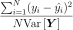

MetaModelResult¶
-
class
MetaModelResult(*args)¶ Data structure containing a metamodel.
- Available constructor:
- MetaModelResult(model, metaModel, residuals, relativeErrors)
Parameters: model :
FunctionPhysical model approximated by a metamodel.
metaModel :
FunctionDefinition of the response surface(s) of the model’s output(s).
residuals : sequence of float
The residual values defined as follows for each output of the model: with the
 model’s values and
model’s values and  the
metamodel’s values.
the
metamodel’s values.relativeErrors : sequence of float
The relative errors defined as follows for each output of the model:  with
 the vector of the model’s values
and the metamodel’s values.
the vector of the model’s values
and the metamodel’s values.See also
Notes
Structure created by the method run() of
KrigingAlgorithmorFunctionalChaosAlgorithmand obtained thanks to the method getResult() of these classes.Methods
getClassName()Accessor to the object’s name. getId()Accessor to the object’s id. getMetaModel()Accessor to the metamodel. getModel()Accessor to the model. getName()Accessor to the object’s name. getRelativeErrors()Accessor to the relative errors. getResiduals()Accessor to the residuals. getShadowedId()Accessor to the object’s shadowed id. getVisibility()Accessor to the object’s visibility state. hasName()Test if the object is named. hasVisibleName()Test if the object has a distinguishable name. setMetaModel(metaModel)Accessor to the metamodel. setModel(model)Accessor to the model. setName(name)Accessor to the object’s name. setRelativeErrors(relativeErrors)Accessor to the relative errors. setResiduals(residuals)Accessor to the residuals. setShadowedId(id)Accessor to the object’s shadowed id. setVisibility(visible)Accessor to the object’s visibility state. -
__init__(*args)¶ Initialize self. See help(type(self)) for accurate signature.
-
getClassName()¶ Accessor to the object’s name.
Returns: class_name : str
The object class name (object.__class__.__name__).
-
getId()¶ Accessor to the object’s id.
Returns: id : int
Internal unique identifier.
-
getModel()¶ Accessor to the model.
Returns: model :
FunctionPhysical model approximated by a metamodel.
-
getName()¶ Accessor to the object’s name.
Returns: name : str
The name of the object.
-
getRelativeErrors()¶ Accessor to the relative errors.
Returns: relativeErrors :
PointThe relative errors defined as follows for each output of the model: with
the vector of the model’s values
and the metamodel’s values.
-
getResiduals()¶ Accessor to the residuals.
Returns: residuals :
PointThe residual values defined as follows for each output of the model: with the
model’s values and the
metamodel’s values.
-
getShadowedId()¶ Accessor to the object’s shadowed id.
Returns: id : int
Internal unique identifier.
-
getVisibility()¶ Accessor to the object’s visibility state.
Returns: visible : bool
Visibility flag.
-
hasName()¶ Test if the object is named.
Returns: hasName : bool
True if the name is not empty.
-
hasVisibleName()¶ Test if the object has a distinguishable name.
Returns: hasVisibleName : bool
True if the name is not empty and not the default one.
-
setModel(model)¶ Accessor to the model.
Parameters: model :
FunctionPhysical model approximated by a metamodel.
-
setName(name)¶ Accessor to the object’s name.
Parameters: name : str
The name of the object.
-
setRelativeErrors(relativeErrors)¶ Accessor to the relative errors.
Parameters: relativeErrors : sequence of float
The relative errors defined as follows for each output of the model: with
the vector of the model’s values
and the metamodel’s values.
-
setResiduals(residuals)¶ Accessor to the residuals.
Parameters: residuals : sequence of float
The residual values defined as follows for each output of the model: with the
model’s values and the
metamodel’s values.
-
setShadowedId(id)¶ Accessor to the object’s shadowed id.
Parameters: id : int
Internal unique identifier.
-
setVisibility(visible)¶ Accessor to the object’s visibility state.
Parameters: visible : bool
Visibility flag.